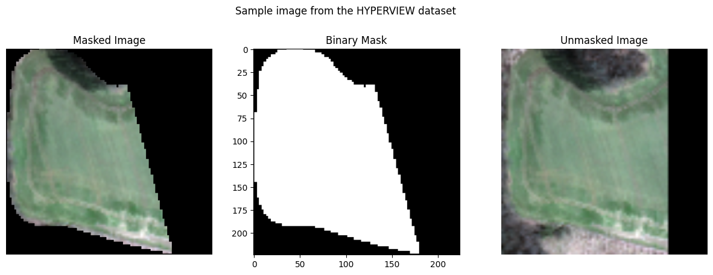
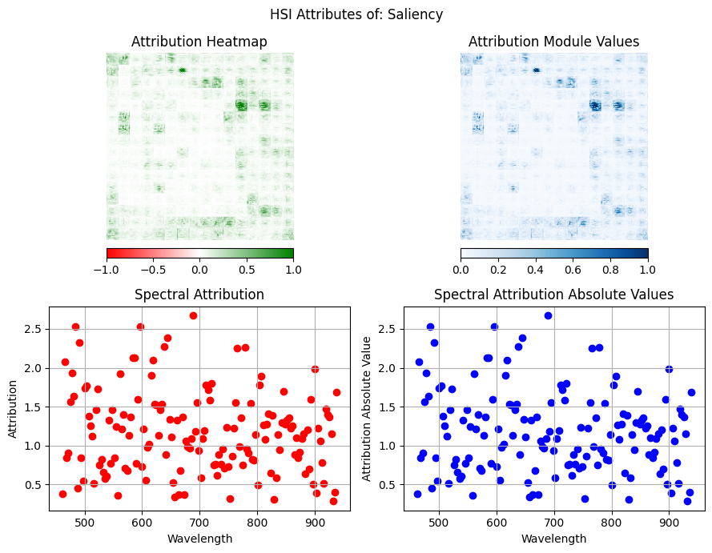
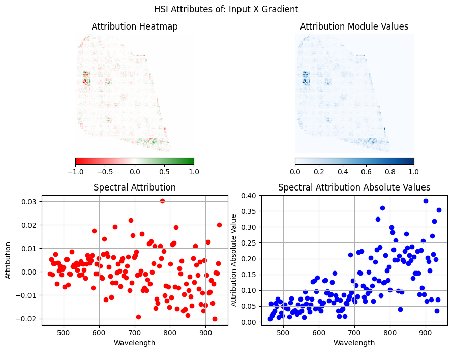
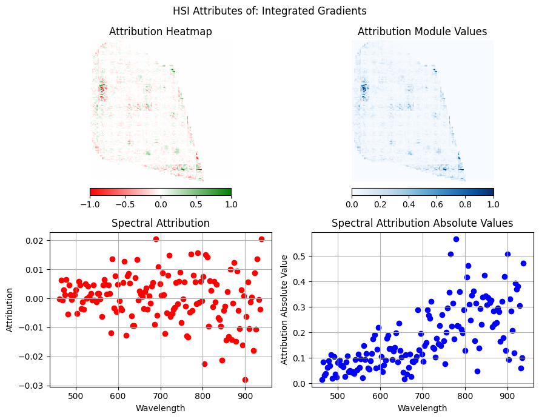
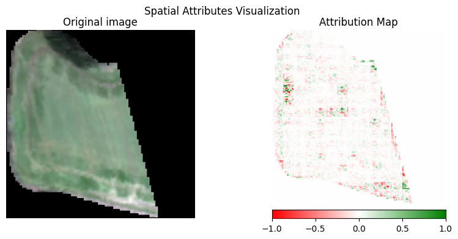
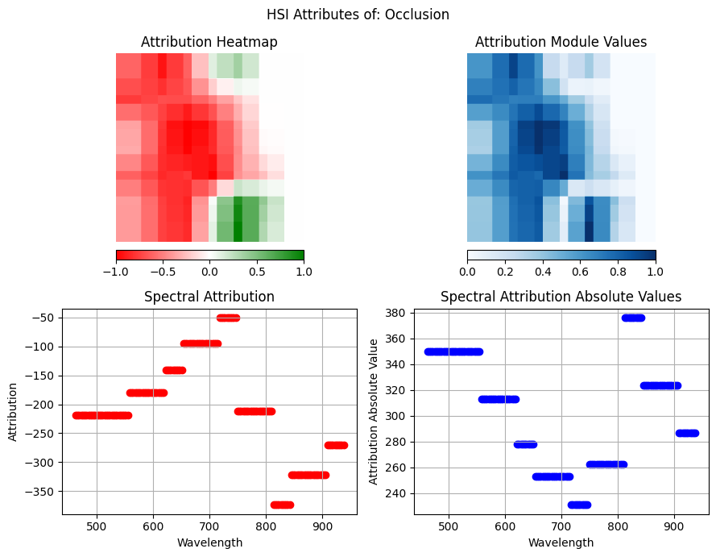
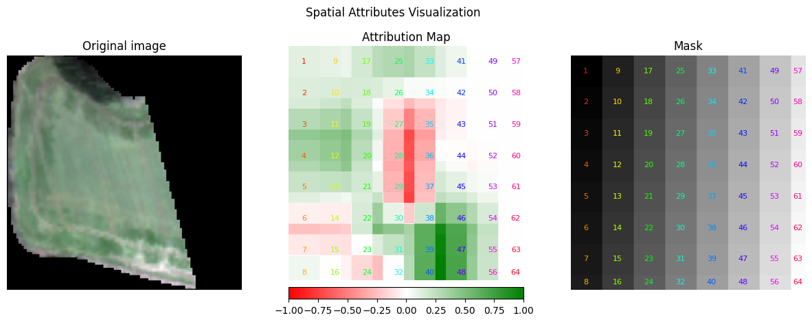
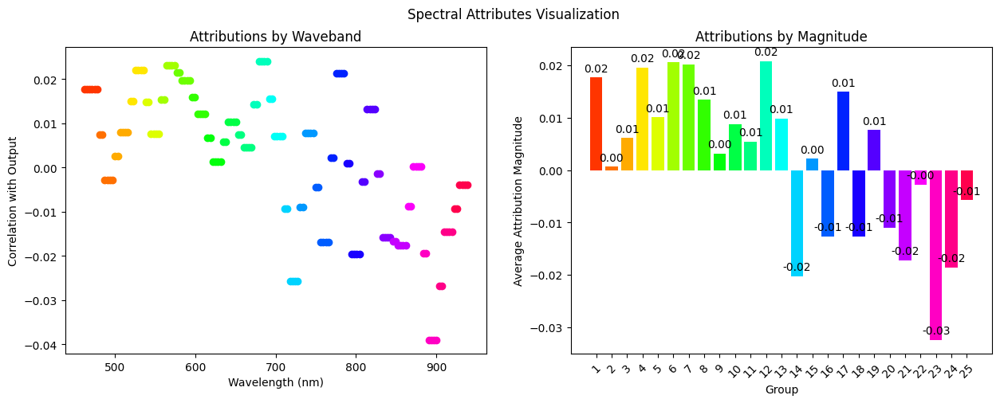
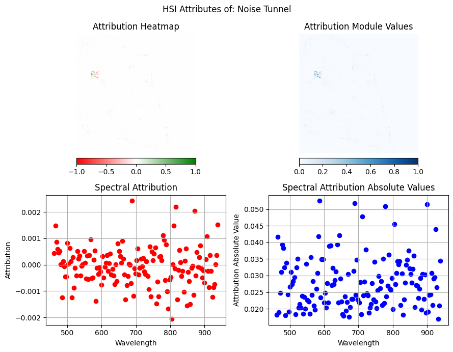
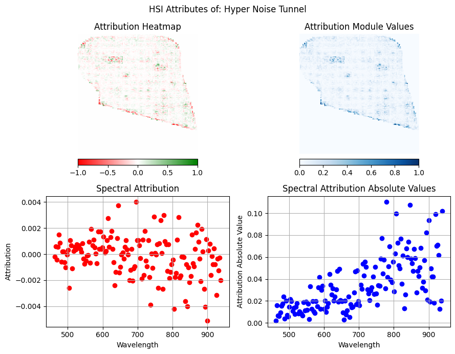

Attribution Methods for Hyperspectral Image Analysis using attr
This notebook showcases attribution methods from meteors.attr to interpret predictions from a hyperspectral image regression model using KP Labs and European Space Agency (ESA)'s HYPERVIEW Challenge dataset, which predicts 4soil parameters from airborne hyperspectral images.
The model used in this notebook is one of the top-performing models in the challenge. The trained model architecture is based on the Vision Transformer (ViT) and CLIP (Contrastive Language-Image Pretraining), and its fine-tuned weights are open-sourced under the Apache License in the Hugging Face Model Hub. In the same place, the original implementation of the CLIP model can be found.
Prerequisites: Install the meteors package from PyPI:
pip install meteors
which includes required dependencies. The clip_model module contains the code needed for additional preprocessing and model loading, and can be downloaded from the Vignettes in the meteors repository.
Table of Contents
- 1. Loading the Model and Hyperspectral data
- 2. Convert data into HSI image and preview the images
- 3. Analyze HSI data with Attribution Algorithms
- 3.1. Gradient Based Methods
- 3.2. Occlusion Based Methods
- 3.3. Perturbation Based Methods
import os
import torch
import numpy as np
import pandas as pd
from torchvision import transforms
import matplotlib.pyplot as plt
import meteors as mt
from clip_utils import load_base_clip, download
# Always try to set the seed for repeatability :)
torch.manual_seed(0)
<torch._C.Generator at 0x1140895b0>
device = torch.device("cuda:0" if torch.cuda.is_available() else "cpu")
print(f"Using device: {device}")
Using device: cpu
1. Loading the Model and Hyperspectral data
The dataset used for training this model can be found on the official page for the HYPERVIEW Challenge.
In the cell below, we load the model.
download_root = os.path.expanduser("~/.cache/clip")
num_classes = 4
Load the CLIP model with the HYPERVIEW head
model = load_base_clip(download_root=download_root, class_num=num_classes)
Load the pre-trained weights
vit_checkpoint_path = download(
"https://huggingface.co/KPLabs/HYPERVIEW-VisionTransformer/resolve/main/VisionTransformer.pt",
download_root,
error_checksum=False,
)
model.load_state_dict(torch.load(vit_checkpoint_path, map_location=device))
model.eval()
model = model.to(device)
And the hyperspectral data.
def _shape_pad(data):
max_edge = np.max(data.shape[1:])
shape = (max_edge, max_edge)
padded = np.pad(
data,
((0, 0), (0, (shape[0] - data.shape[1])), (0, (shape[1] - data.shape[2]))),
"constant",
constant_values=0.0,
)
return padded
def load_single_npz_image(image_path):
with np.load(image_path) as npz:
data = npz["data"]
mask = npz["mask"]
mask = 1 - mask.astype(int)
mask = _shape_pad(mask)
data = _shape_pad(data)
mask = mask.transpose((1, 2, 0))
data = data.transpose((1, 2, 0))
data = data / 5419
return data, mask
def get_eval_transform(image_shape):
return transforms.Compose(
[
transforms.Resize((image_shape, image_shape)),
]
)
data, mask = load_single_npz_image("data/0.npz")
masked_data = data * mask
masked_data = torch.from_numpy(masked_data.astype(np.float32)).permute(2, 0, 1)
eval_tr = get_eval_transform(224)
image_torch = eval_tr(masked_data)
not_masked_image_torch = eval_tr(torch.from_numpy(data.astype(np.float32)).permute(2, 0, 1))
print(f"Original data shape: {data.shape}")
print(f"Original mask shape: {mask.shape}")
print(f"Transformed data shape: {image_torch.shape}")
Original data shape: (89, 89, 150)
Original mask shape: (89, 89, 150)
Transformed data shape: torch.Size([150, 224, 224])
As specified in the HYPERVIEW Challenge dataset description, we will also utilize the information about bands' wavelengths.
with open("data/wavelenghts.txt", "r") as f:
wavelengths = f.readline()
wavelengths = [float(wave.strip()) for wave in wavelengths.split(",")]
2. Convert data into HSI image and preview the images
Now, having the raw data - the tensor representing the image, its wavelengths and the image orientation, we can to combine this information into a complete hyperspectral image. To create the hyperspectral image, we will use the HSI data class from the meteors package.
From now on, we will use the HSI class to represent the hyperspectral image. The HSI class provides a set of methods to work with hyperspectral images, including visualization.
Additionally, we may provide the binary mask, which may cover data irrelevant for the task, as suggested by the challenge dataset providers. Thus, We create a binary mask from the image, where 1 is the masked region and 0 is the unmasked region.
binary_mask = (image_torch > 0.0).int()
The HSI object has the following attributes:
data- the preprocessed hyperspectral image data in numpy or pytorch with the shape (bands, height, width)wavelengths- the wavelengths list of the hyperspectral imageorientation- the orientation of the image, here it isCWH(Channels, Width, Height)binary_mask- the binary mask of the imagedevice- the device where the image data will be stored. We can provide it later with the.to(device)method
hsi_0 = mt.HSI(
image=not_masked_image_torch,
wavelengths=wavelengths,
orientation="CWH",
binary_mask=binary_mask,
device=device,
)
fig, (ax1, ax2, ax3) = plt.subplots(1, 3, figsize=(15, 5))
mt.visualize.visualize_hsi(hsi_0, ax1, use_mask=True)
ax1.set_title("Masked Image")
ax2.imshow(binary_mask[0, ...].T.cpu().numpy(), cmap="gray")
ax2.set_title("Binary Mask")
mt.visualize.visualize_hsi(hsi_0, ax3, use_mask=False)
ax3.set_title("Unmasked Image")
fig.suptitle("Sample image from the HYPERVIEW dataset")
plt.show()

In the left image, we see the input RGB representation of the data, in the middle: the mask of the hyperspectral image, and in the right: the whole area captured within this hyperspectral image (without any mask).
The HSI dataclass automatically provides the clean RGB image corresponding to the hyperspectral image, and releases us from the obligation of selecting the specific wavelengths to be plotted, and considering the image orientation or processing.
Now, we can provide the hyperspectral image to the model and get the prediction. The model will return the predictions for the 4 classes of soil parameters which should be estimated based on the provided hyperspectral image.
original_prediction = model(not_masked_image_torch.unsqueeze(0))
hsi_prediction = model(hsi_0.image.unsqueeze(0))
assert torch.allclose(original_prediction, hsi_prediction, atol=1e-3)
The soil parameters that are included in the HYPERVIEW dataset encompass:
prediction_dict = {0: "Phosphorus", 1: "Potassium", 2: "Magnesium", 3: "pH"}
predictions = {prediction_dict[i]: float(hsi_prediction[0, i].cpu().detach().numpy()) for i in range(4)}
predictions = pd.Series(predictions)
predictions
Phosphorus 0.210551
Potassium 0.350670
Magnesium 0.391935
pH 0.883228
dtype: float64
3. Analyze HSI data with Attribution Algorithms
The Meteors package provides several attribution algorithms grouped into three categories (if you want to learn more about each technique, just click the method and it will redirect you to the documentation):
- Gradient Based:
Saliency,InputXGradient,IntegratedGradients - Occlusion Based:
Occlusion - Perturbation Based:
NoiseTunnel,HyperNoiseTunnel
Let's explore how these methods help interpret our hyperspectral image model's predictions.
Note Each attribution method in this tutorial can only analyze one class at a time for multi-target models. We'll focus on analyzing the P class (index 0) in our examples, though similar analyses could be performed for other classes.
Before we start, let's prepare our model for the interpretation task by wrapping it with the meteors helper class.
explainable_model = mt.models.ExplainableModel(model, "regression")
3.1. Gradient Based Methods
Gradient-based attribution methods compute the importance of each input feature by analyzing the model's gradients with respect to the input. These methods are computationally efficient and provide insights into how the model's predictions change with small input variations.
Saliency
Simple yet effective method that computes the gradient of the output with respect to the input. The magnitude of these gradients indicates which input features most strongly influence the prediction.
Paper: Deep Inside Convolutional Networks: Visualising Image Classification Models and Saliency Maps
InputXGradient
An extension of Saliency that multiplies the input by its gradient. This helps reduce noise in the attribution maps and better highlights relevant features by accounting for both feature values and their gradients.
Paper: Not Just a Black Box: Learning Important Features Through Propagating Activation Differences
IntegratedGradients
More sophisticated approach that accumulates gradients along a path from a baseline to the input. This method addresses the gradient saturation problem found in simpler approaches. It works by performing the following steps:
- Accumulate gradients along a straight-line path from a baseline (usually zero) to the input
- Compute an integral of gradients to capture the cumulative feature importance
- Use multiple interpolated steps between baseline and input for better approximation
- Satisfy important theoretical properties like completeness (attributions sum to the difference between output and baseline)
Paper: Axiomatic Attribution for Deep Networks
saliency = mt.attr.Saliency(explainable_model)
inputxgrad = mt.attr.InputXGradient(explainable_model)
ig = mt.attr.IntegratedGradients(explainable_model)
To use these methods, we need to just call the attribute method on the interpreter model with this arguments (more details in the documentation):
hsi- the hyperspectral image datatarget- the target index class to be analyzed: 0 forP(Phosphorus) class
and to visualize the results, we can use one of the visualization methods provided by the meteors package.
%%time
saliency_attr = saliency.attribute(
hsi_0,
target=0, # Class index to be analized
)
mt.visualize.visualize_attributes(saliency_attr, use_pyplot=True)

CPU times: user 12.6 s, sys: 1.49 s, total: 14.1 s
Wall time: 3.38 s
The plots that we use to visualize our attributions are created from the visualize. The visualize_attributes function visualizes the attribution with two spatial plots on top and two spectral plots below. The spatial plots present correlation of the spatial pixels with the output. If the correlation is negative (red), it means that this pixel lowered the model estimation for class P; if positive (green), it increased the prediction; and if around zero (white), then it was not impactful. In the lower plots, we see attributions aggregated per wavelength, showcasing how each wavelength correlated with the output - once again, negative values lowered, positive ones increased, and values close to zero were not impactful. These attributions are aggregated spatially and spectrally with mean over spatial or spectral axis.
InputXGradient and IntegratedGradients methods can also store gradients for future use. This maybe useful if we want to analyze the gradients in more detail or visualize them in a different way, but for efficiency reasons, keep_gradient is set to False by default.
%%time
inputxgrad_attr = inputxgrad.attribute(hsi_0, target=0)
mt.visualize.visualize_attributes(inputxgrad_attr, use_pyplot=True)

CPU times: user 12.9 s, sys: 1.7 s, total: 14.6 s
Wall time: 4.11 s
For the IntegratedGradients method, we may also provide:
return_convergence_delta- if set toTrue, the method will return the convergence delta, which is the difference between the approximated integral and the true integral. This can be useful to assess the quality of the approximation. The value of the delta is stored inscoreattribute of theAttributionobject.n_steps- the number of steps to approximate the integral - more steps will likely yield better results but will also take longer to compute.
%%time
ig_attr = ig.attribute(
hsi_0,
target=0,
baseline=0.0,
return_convergence_delta=True,
n_steps=50,
)
print(f"Convergence Delta: {ig_attr.score}")
mt.visualize.visualize_attributes(ig_attr, use_pyplot=True)
Convergence Delta: 0.0011369975069135917

CPU times: user 8min 12s, sys: 3min 21s, total: 11min 34s
Wall time: 2min 53s
Each method calculates feature importance on a per-pixel basis, which can be visualized across both spatial and spectral domains. Our analysis of the three methods revealed distinct characteristics.
The saliency method, while computationally fastest, produced noisy attributions and incorrectly highlighted importance in masked (zero-value) regions.
The input × gradient method offered clearer results with well-defined importance regions. It performed comparably to integrated gradients but with significantly faster computation time. The integrated gradients method, though computationally intensive, typically provided the most precise attributions. However, in this particular case, its results were not substantially better than those from the input × gradient method. Its computation time can be adjusted through the number of integration steps, offering flexibility in balancing attribution quality against processing speed.
In addition, methods that return the attributions for spatial and spectral dimensions can be visualized spatially for specific bands or wavelengths. For example, in the case of Integrated Gradients, we can see that the 900 nm wavelength is the most negatively impactful for the model prediction, so let's visualize the attributions spatially with visualize_bands_spatial_attributes to see where the model is focusing on this wavelength.
mt.visualize.visualize_bands_spatial_attributes(ig_attr, spectral_wavelengths=[900.01], use_pyplot=True)

The visualization of specific wavelengths presents similar plots as from visualize_attributes but with only the spatial plots for the selected wavelength. The visualized wavelength is spatially similar to the aggregated spatial attributions, which may indicate that the whole spatial structure of model importance is similar for every wavelength but with different importance levels.
3.2. Occlusion Based Methods
Occlusion-based methods offer an intuitive approach to understanding model predictions by systematically blocking (occluding) portions of the input and observing how the model's output changes. Unlike gradient methods, these techniques don't require access to model gradients, making them applicable to any model architecture.
Occlusion
This method works by performing the following steps:
- Slide a mask (window) across the input image
- Set the masked region to a baseline value (typically zero or mean)
- Measure the difference in model output between original and occluded inputs
- Create an attribution map where higher values indicate regions whose occlusion significantly impacts the prediction
Paper: Visualizing and Understanding Convolutional Networks
For hyperspectral images, occlusion can be performed along the spectral dimension (blocking individual bands) or spatially (masking image regions).
occlusion = mt.attr.Occlusion(explainable_model)
occlusion method can be used with the following arguments:
hsi- the hyperspectral image datatarget- the target index class to be analyzed: 0 forP(Phosphorus) classbaseline- the baseline value to replace the occluded region. It should be a float value.sliding_window_shapes- the shape of the sliding window to occlude the image. It should be a tuple of three integers 3D occlusion.strides- the strides of the sliding window. It should be a tuple of three integers 3D occlusion.
%%time
occlusion_attr = occlusion.attribute(
hsi_0,
target=0,
baseline=0.0,
sliding_window_shapes=(50, 50, 50),
strides=(30, 30, 30),
)
mt.visualize.visualize_attributes(occlusion_attr, use_pyplot=True)

CPU times: user 19min 38s, sys: 1min 22s, total: 21min
Wall time: 3min 50s
The visualizations are similar to those from gradient-based methods; however, the granularity of the attributions is much smaller. This is due to the sliding_window_shapes and strides parameters. If we specified smaller sliding_window_shapes, we would get more granular attributions, and depending on the mask step (strides), we could also cover more or less pixels. The most important considerations when choosing the strides and sliding_window_shapes are that strides should not be bigger than sliding_window_shapes, as it is beneficial for masks to overlap minimally in every step. Additionally, we should start first with the large mask, as decreasing the mask size requires more steps to obtain the attributions, which means longer computation time.
%%time
occlusion_spatial_attr = occlusion.get_spatial_attributes(
hsi_0, target=0, baseline=0.0, sliding_window_shapes=(50, 50), strides=(30, 30)
)
mt.visualize.visualize_spatial_attributes(occlusion_spatial_attr, use_pyplot=True)

CPU times: user 4min 16s, sys: 17.9 s, total: 4min 34s
Wall time: 49.8 s
The Occlusion method also allows us to calculate the mask only for spatial dimensions rather than for every pixel. The parameters remain the same, but notice that we set a 2D shape instead of a 3D shape. We don't need to pass 3D sliding_window_shapes and strides because for the spatial axes we set the shape automatically to the maximum. This means that the mask and the step will always cover all spectral pixels in the given spatial context, allowing for more specific spatial analysis.
The visualization process is similar to the one presented before, but now uses the visualize_spatial_attributes function, which produces three components: the original image on the left, an attribution map in the center (where colors and values represent the correlation with the output class), and a mask visualization on the right. Note that the displayed mask is just a simple version how mask behaves, as the strides is not larger than the mask size. In practice, the masks should always overlap, but for visualization simplicity, we assumed non-overlapping masks.
%%time
occlusion_spectral_attr = occlusion.get_spectral_attributes(
hsi_0, target=0, baseline=0.0, sliding_window_shapes=(8), strides=(6)
)
mt.visualize.visualize_spectral_attributes(occlusion_spectral_attr, use_pyplot=True)

CPU times: user 1min 53s, sys: 7.94 s, total: 2min 1s
Wall time: 21.3 s
Just as we can perform analysis in the spatial context, we can also analyze the spectral dimension. For spectral analysis, we specify only one-dimensional shapes for sliding_window_shapes and strides, as the mask will cover all spatial pixels for each spectral position. The visualize_spectral_attributes function presents two plots: the left plot shows the attribution scores for each wavelength, colored by mask ID, while the right plot uses the same color coding but displays the attributions as a bar plot, with groups on the x-axis to better compare contributions across different mask IDs.
The occlusion method provides visualizations similar to gradient-based approaches but offers more granular control over spectral and spatial analysis. By selectively occluding regions, we can analyze either entire spatial or spectral regions independently. Although our results appear blurry due to large occlusion regions, they reveal clear patterns: spatial occlusion shows higher importance in non-masked regions as expected, while spectral analysis indicates that lower wavelengths have more positive importance and higher wavelengths have more negative importance. While the precision of results can be improved by using smaller occlusion regions, this comes at the cost of increased computation time.
3.3. Perturbation Based Methods
Perturbation-based methods analyze model behavior by introducing controlled noise or variations to the input. These methods help understand model robustness and feature importance by observing how predictions change under different types of perturbations.
Note: Both methods below require base attribution algorithms (e.g., Saliency, IntegratedGradients) to compute attributions for perturbed samples. Based on previous results, we'll use Saliency as the base method.
NoiseTunnel (SmoothGrad)
A technique that reduces attribution noise by performing the following steps:
- Add Gaussian noise to the input multiple times
- Compute attributions for each noisy sample
- Average the results to produce smoother, more reliable attribution maps
This approach helps eliminate random fluctuations and highlights consistently important features.
Paper: SmoothGrad: removing noise by adding noise
HyperNoiseTunnel
HyperNoiseTunnel is a novel attribution method designed specifically for hyperspectral image analysis. Unlike traditional approaches like SmoothGrad that add Gaussian noise, this method works by strategically masking spectral bands with baseline values. This process can be controlled through either a probability of masking each band independently or by specifying a fixed number of bands to mask.
The method generates perturbed samples that maintain the original hyperspectral data distribution while introducing meaningful variations. By preserving unmasked bands and systematically replacing selected ones with baseline values, it produces smoother attribution maps that retain important spectral relationships. This makes it particularly valuable for remote sensing applications, where understanding the contribution of specific spectral bands is crucial for model interpretation.
The method's workflow proceeds with performing the following steps:
- Randomly mask spectral bands with baseline values instead of adding Gaussian noise
- Generate samples that better preserve the original hyperspectral data distribution
- Produce smoother attribution maps while maintaining spectral relationships
- Offer more interpretable results for hyperspectral applications compared to traditional noise-based methods
This specialized approach provides insights into band-specific contributions while maintaining the physical meaning of spectral signatures.
base_attr = mt.attr.InputXGradient(explainable_model)
nt_attr = mt.attr.NoiseTunnel(base_attr)
hnt_attr = mt.attr.HyperNoiseTunnel(base_attr)
The NoiseTunnel and HyperNoiseTunnel methods can be used with the following arguments:
hsi- the hyperspectral image datatarget- the target index class to be analyzed: 0 forP(Phosphorus) classn_samples- the number of perturbed samples to generatemethod- how the final aggregation of all the generatated perturbation attributions should be calculatedbaseline- for theHyperNoiseTunnelmethod, the baseline value to replace the occluded region. It should be a float value.keep_gradient- whether to keep the gradients for future use. If we choose theIntegratedGradientsorInputXGradientas the base method, we can set this toTrueto store the gradients for future use. By default, it is set toFalse.
%%time
nt_attr = nt_attr.attribute(
hsi_0,
target=0,
n_samples=3,
method="smoothgrad",
)
mt.visualize.visualize_attributes(nt_attr, use_pyplot=True)

CPU times: user 26.9 s, sys: 3.61 s, total: 30.5 s
Wall time: 5.67 s
Compared to previous methods and results in the spectral and spatial plots, we observe reduced number of important pixels. This method is specifically designed to eliminate noisy attributions that show high impact regardless of small perturbations, which is particularly evident in the spatial plots where only a few pixels deviate from white.
While we set the number of perturbed samples (n_samples) to 3 in this example for demonstration purposes, this parameter significantly influences the results. Although increasing this value would lead to longer computation times, we encourage users to experiment with higher values and evaluate the resulting attributions to find the optimal balance between accuracy and computational efficiency.
%%time
hnt_attr = hnt_attr.attribute(hsi_0, target=0, n_samples=50, baseline=0.0)
mt.visualize.visualize_attributes(hnt_attr, use_pyplot=True)

CPU times: user 6min 44s, sys: 58.7 s, total: 7min 43s
Wall time: 1min 22s
The HyperNoiseTunnel can produce spatial results as shown above, but as described in the method overview, its spectral analysis capabilities are particularly noteworthy. The analysis reveals that lower wavelength bands have less influence on the method's output, while moving further along the spectral axis, the impact of "removed" pixels increases. Notably, the higher wavelengths show a strong negative influence on the output.
To summarize, while the Noise Tunnel (SmoothGrad) method produces results similar to Input x Gradient, it offers distinct advantages. In spatial visualization, it effectively eliminates low-value variables, highlighting only the most significant patches. This suggests that some regions identified by Input x Gradient might be noise, while these highlighted patches are crucial for prediction. The HyperNoiseTunnel's spectral analysis demonstrates improved clarity and consistency compared to the standard Noise Tunnel, producing patterns more aligned with occlusion-based methods. This similarity to occlusion results indicates that HyperNoiseTunnel provides more reliable and interpretable spectral insights.